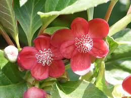

Austrobaileyaceae
Austrobaileya Family
Austrobaileyaceae is a monotypic family of flowering plants belonging to the basal angiosperm order Austrobaileyales. It contains only the genus Austrobaileya, comprising one or two species of large woody lianas endemic to the rainforests of northeastern Queensland, Australia. The family is significant for its position as one of the earliest diverging lineages of angiosperms (part of the ANA grade) and possesses several 'primitive' traits, including vesselless wood and flowers with numerous, spirally arranged parts.
Overview
Austrobaileyaceae is a unique family represented by a single genus, Austrobaileya, with one variable species (A. scandens, sometimes including A. maculata) confined entirely to the wet tropical rainforests of northeastern Queensland, Australia. These plants grow as large, woody vines (lianas), climbing high into the forest canopy.
This family holds immense botanical importance due to its phylogenetic position. Along with Amborellales and Nymphaeales, Austrobaileyales (the order containing Austrobaileyaceae) forms the 'ANA grade', representing the three earliest diverging lineages of all living flowering plants. Austrobaileya exhibits several features considered ancestral among angiosperms, including wood that lacks vessel elements (relying solely on tracheids, like Amborella and Winteraceae), flowers with numerous parts arranged spirally rather than in fixed whorls, relatively undifferentiated stamens (laminar), and separate carpels (apocarpy). The large, pendulous flowers often have an unpleasant odor, suggesting pollination by flies or beetles.
Austrobaileyaceae has no significant economic use but is crucial for scientific research into the origins and early evolution of flowering plants, providing insights into the morphology, anatomy, and genetics of the ancestors of modern angiosperms.
Quick Facts
- Scientific Name: Austrobaileyaceae
- Common Name: Austrobaileya family
- Number of Genera: 1 (Austrobaileya)
- Number of Species: 1 (or 2)
- Distribution: Endemic to NE Queensland, Australia (wet tropical rainforests)
- Evolutionary Group: Angiosperms - Austrobaileyales (ANA grade - basal angiosperms)
- Current Date: March 29, 2025
Key Characteristics
Growth Form and Habit
Large woody lianas (climbers), evergreen. Wood lacks vessel elements, containing only tracheids. Plants often contain ethereal oil cells, making them aromatic.
Leaves
Leaves are opposite, simple, with entire margins, and a leathery (coriaceous) texture. They are petiolate and often possess pellucid dots (translucent oil glands). Stipules are absent.
Inflorescence
Flowers are typically solitary, borne in leaf axils or terminal on short shoots, and are usually pendulous (hanging downwards). Large bracts may be present below the flower.
Flowers
Flowers are relatively large (4-6 cm diameter), bisexual, actinomorphic (radially symmetrical), with floral parts spirally arranged. They often emit a fetid or unusual fruity/spicy odor.
- Perianth: Consists of numerous (~12-24) undifferentiated tepals, spirally arranged and grading from outer sepal-like to inner petal-like structures. Tepals are fleshy, typically greenish-yellow, often marked with maroon or purplish spots or streaks.
- Androecium: Stamens are numerous (~12-25) and spirally arranged, showing a gradual transition (intergradation) from outer functional stamens to inner sterile staminodes. Functional stamens are broad, flattened (laminar), and somewhat petaloid, lacking clear differentiation into filament and anther; pollen sacs are embedded on the inner (adaxial) surface. Inner staminodes (~6-9) are smaller, reflexed over the gynoecium, lack pollen, and secrete nectar.
- Gynoecium: Carpels usually several (6-9, up to 14), distinct (apocarpous), superior, and spirally arranged on a slightly elongated receptacle. Each carpel contains several (4-14) ovules in two rows along the ventral suture (marginal placentation). The stigma is complex, decurrent along the unsealed or partially sealed edge of the carpel.
Fruits and Seeds
The fruit is an aggregate of fleshy, indehiscent, berry-like or drupe-like monocarps, each developing from a single carpel. Fruits are often apricot-colored or yellowish when ripe and contain several seeds.
Seeds are relatively large and flattened. The endosperm is abundant, oily, and distinctively ruminate (irregularly folded or intruded by the seed coat, similar to Annonaceae and Myristicaceae). The embryo is minute.
Chemical Characteristics
Plants contain ethereal oil cells contributing to aromatic properties. Alkaloids have been reported. The lack of vessels in the wood and the presence of ruminate endosperm are significant anatomical features.
Field Identification
Identifying Austrobaileyaceae (Austrobaileya) requires recognition of its liana habit, specific leaf and flower features, limited geographic range, and awareness of its 'primitive' characteristics:
Primary Identification Features
- Habit and Location: Large woody liana endemic to wet tropical rainforests of NE Queensland, Australia.
- Opposite, Simple, Entire Leaves: Leaves paired, leathery, often with pellucid dots (oil glands visible when held to light).
- Large, Solitary, Pendulous Flowers: Flowers hang downwards, relatively large (4-6 cm).
- Numerous Spiral Tepals: ~12-24 fleshy, greenish-yellow tepals often spotted/streaked maroon, grading from outer to inner.
- Numerous Laminar Stamens & Inner Staminodes: Stamens broad, petal-like, not differentiated into filament/anther, grading into smaller inner nectar-producing staminodes.
- Distinct Superior Carpels (Apocarpous): Several (6-9+) separate carpels visible in the center of the flower.
- Aggregate Fruit: Fruit composed of several separate fleshy berry/drupe-like monocarps.
- Vesselless Wood: (Not directly observable in field) A key anatomical feature.
- Ruminate Endosperm: (Requires seed dissection) Another key internal feature.
Secondary Identification Features
- Absence of Stipules.
- Fetid or Spicy/Fruity Flower Odor.
- Leathery Leaf Texture.
Seasonal Identification Tips
- Year-round: The large liana habit with opposite, simple, entire, leathery leaves (potentially with pellucid dots) in NE Queensland rainforests is strongly indicative.
- Flowering Season: Primarily spring and summer. The large, unusual, pendulous flowers with spiral parts are highly diagnostic.
- Fruiting Season: Following flowering. Look for the aggregate clusters of fleshy, yellowish or apricot-colored monocarps.
Common Confusion Points
Within its rainforest habitat, other lianas exist, but Austrobaileya's combination of features is unique:
- Other Lianas with Opposite Leaves: Families like Apocynaceae, Rubiaceae, or Malpighiaceae may include lianas with opposite leaves, but their floral structures (typically 5-merous, syncarpous ovary, often specialized pollination mechanisms) and fruit types (follicles, capsules, samaras, different berries/drupes) are very different. None share the primitive floral traits of Austrobaileya.
- Annonaceae: Some Annonaceae are lianas with large flowers and apocarpous gynoecia, leading to aggregate fruits. However, Annonaceae typically have alternate, distichous leaves, flowers with parts clearly in whorls of 3 (3 sepals, 3+3 petals), and stamens usually differentiated into filament and anther (though short/thick). They possess vessels in their wood.
- Magnoliaceae (e.g., Michelia vines): Also Magnoliids with spiral floral parts. However, they are typically trees/shrubs (though some climb), possess stipules leaving scars, have distinct petals/tepals, and different fruit types (follicles/samaras on elongated receptacle).
The combination of liana habit, opposite entire leathery leaves, vesselless wood, large flowers with numerous spiral tepals, laminar stamens grading to staminodes, apocarpous gynoecium, aggregate fleshy fruit, and ruminate endosperm, restricted to NE Queensland, is definitive for Austrobaileyaceae.
Field Guide Quick Reference
Look For:
- Woody liana (NE Queensland only)
- Vesselless wood
- Opposite, simple, entire, leathery leaves
- Pellucid dots often present
- No stipules
- Large, solitary, pendulous flowers
- Numerous spiral fleshy tepals (spotted)
- Numerous laminar stamens + inner staminodes
- Distinct superior carpels (6-9+) (apocarpous)
- Fruit: Aggregate of fleshy monocarps
- Ruminate endosperm
Key Variations:
- (Monotypic family - essentially no variation at this level)
- Degree of spotting on tepals
- Number of carpels can vary
Notable Examples
As Austrobaileyaceae is a monotypic family, it contains only one genus and species (sometimes split into two very similar species):

Austrobaileya scandens
Austrobaileya
The sole representative of the Austrobaileyaceae family (sometimes A. maculata also recognized). This large woody climber is endemic to the wet tropical rainforests of northeastern Queensland, Australia. It is profoundly significant as a member of the Austrobaileyales, one of the three earliest diverging lineages ('ANA grade') of all living flowering plants.

Austrobaileya (Flower)
Austrobaileya Flower Structure
The flower exhibits ancestral traits: numerous fleshy tepals arranged spirally, numerous broad ('laminar') stamens that lack clear filament/anther distinction, grading into inner nectar-secreting staminodes, surrounding several distinct superior carpels (apocarpy). The flowers often emit a strong, unusual odor.

Austrobaileya (Fruit)
Austrobaileya Fruit
The fruit is an aggregate resulting from the apocarpous gynoecium. Each carpel develops into a separate, fleshy, berry-like or drupe-like monocarp, often apricot or yellowish in color when mature. Each monocarp contains several seeds embedded within pulp.
Phylogeny and Classification
Austrobaileyaceae occupies a critically important position near the very base of the angiosperm evolutionary tree. It belongs to the order Austrobaileyales. Along with Amborellales (containing only Amborella) and Nymphaeales (water lilies and relatives), Austrobaileyales forms the "ANA grade," representing the first three successive branching events in the phylogeny of living flowering plants. These lineages diverged before the vast majority of angiosperms (the Mesangiospermae, comprising Magnoliids, Monocots, and Eudicots) radiated.
Within the Austrobaileyales order, Austrobaileyaceae is sister to a clade containing the other two families in the order: Schisandraceae (the Star Anise family, which now includes the former Illiciaceae) and Trimeniaceae (a small family from Southeast Asia, Australia, and the Pacific). Studying Austrobaileyaceae, alongside Amborella and Nymphaeales, is fundamental to understanding the characteristics of the earliest angiosperms and the evolutionary trajectory leading to modern flowering plant diversity.
Position in Plant Phylogeny
- Kingdom: Plantae
- Clade: Angiosperms (Flowering plants)
- Order: Austrobaileyales
- Family: Austrobaileyaceae
Evolutionary Significance
Austrobaileyaceae (Austrobaileya) is profoundly significant in evolutionary botany:
- Basal Angiosperm Lineage (ANA Grade): Represents one of the three earliest diverging extant lineages of flowering plants, crucial for reconstructing the ancestral angiosperm and understanding early floral evolution.
- "Primitive" Traits: Exhibits features considered ancestral in angiosperms, such as vesselless wood, flowers with numerous spirally arranged parts, relatively undifferentiated laminar stamens, and distinct carpels (apocarpy).
- Ruminate Endosperm: Presence shared with some other Magnoliids (Annonaceae, Myristicaceae), indicating potential ancestral connections or parallel evolution of this seed structure.
- Comparative Genomics: Its phylogenetic position makes its genome (if sequenced) a vital resource for comparative studies across all angiosperms.
- Relictual Endemism: Confined to a small area of NE Queensland, highlighting the region's importance as a refugium for ancient plant lineages.